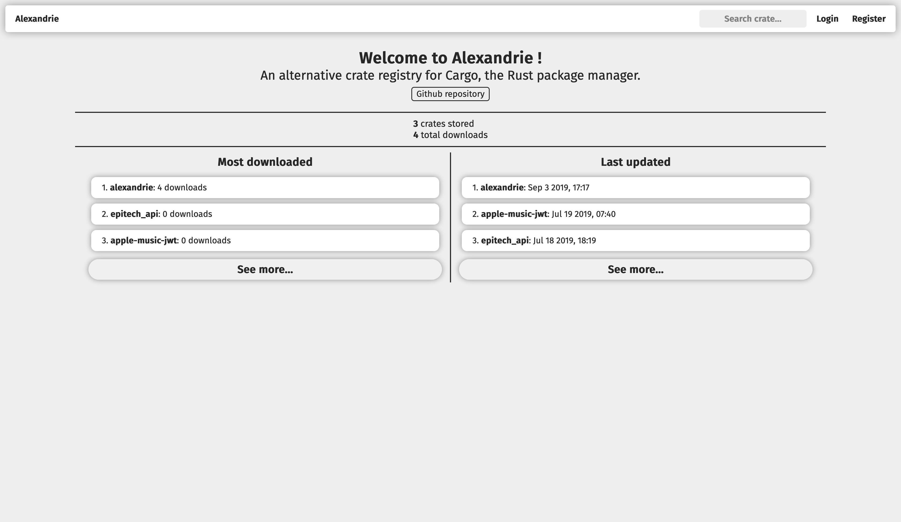

Welcome to Alexandrie

Alexandrie is a modular alternative crate registry for Rust crates.

It implements the Rust's Alternative Crate Registries RFC in order to be usable with Cargo.
It seeks to be modular, extensible and configurable to be usable in many different environments, from a openly-accessible crate store to a private registry in a company's toolchain.
It includes both a programmatic API and an optional server-rendered frontend.
Getting started
How to build
Before anything, keep in mind that the current minimum supported Rust version for Alexandrie is 1.68 (on stable), make sure to check if your local Rust version is adequate by running rustc -V.
Alexandrie offers multiple options to be used as its database, so before building Alexandrie, you'll need to pick which supported database vendor you wish to use.
The currently supported vendors are:
sqlite: for SQLitemysql: for MySQL (including MariaDB)postgres: for PostgreSQL
To build, you can then run:
# navigate to the `crates/alexandrie/` subfolder
cd crates/alexandrie
# build the binary
# (replace `(foo|bar)` occurences by one of `foo` or `bar`)
# (replace `[foo]` occurences by either `foo` or nothing)
cargo build [--release] \
--no-default-features \
--features "[frontend] (sqlite|mysql|postgres)"
Before running Alexandrie, you'll need to configure your instance in the alexandrie.toml file.
The database is configured through the [database] table:
[database]
# Replace the '<...>' placeholders by their real actual values.
# For MySQL
url = "mysql://<user>:<password>@<hostname>:<port>/<database>"
# For PostgreSQL
url = "postgresql://<user>:<password>@<hostname>:<port>/<database>"
# For SQLite
url = "<path-to-sqlite-database-file>"
# or:
url = ":memory:" # ephemeral in-memory database, doesn't persists between restarts
Then, you can configure the crates' tarballs storage strategy and the crate index management strategy that you want to use.
Here is an example of how to do it:
[index]
type = "command-line"
path = "crate-index"
[storage]
type = "disk"
path = "crate-storage"
You can find more information about crate index management and crate stores in the 'What's available' section of this book.
You can also configure things like the address and port of the server:
[general]
bind_address = "127.0.0.1:3000" # The endpoint and port on which to serve the service.
Then, you need to configure a crate index.
A crate index is simply a git repository that the registry uses to keep metadata information about each crate and their individual versions.
The repository can be created on any machine you want, as long as it is reachable from the current machine as a git remote in a clone of that repository.
The remote can be specified using either an HTTPS or SSH link.
If you're using SSH for the remote link, Cargo might have an issue where it can't fetch from the registry's index when doing cargo search or cargo build.
This is because Cargo uses libgit2 to fetch from remotes and fails to find the SSH credentials needed to do so.
To work around this issue, you may need to set the CARGO_NET_GIT_FETCH_WITH_CLI environment variable to true, so that Cargo will offload the fetching from remotes operation to the git command-line utility.
See issue #44 for a previous occurence of this exact issue.
To run the registry with the configuration above, be sure to clone your crate index at the location designated by the path key in [index].
In this case, it is ./crate-index.
To clone an existing crate index, you can run:
# Replace the '<...>' placeholders by their real actual values.
git clone <url-of-the-crate-index> <path-from-config>
# <url-of-the-crate-index>: URL to the git repository serving as the registry's crate index.
# <path-from-config>: Path to the same directory as the one specified as `index.path` in the `alexandrie.toml`.
# Example:
git clone 'https://github.com/Hirevo/alexandrie-index' 'crate-index'
If you want to create one, you can refer to the Cargo's Alternative Registries RFC to learn about the layout of such an index.
You can also visit the crates.io index or the crates.polomack.eu index as deployed examples.
How to run
Once everything is configured, you can run with: cargo run [--release].
Then, if you want to use this index with Cargo, you can follow these steps:
- Edit or create the
~/.cargo/configfile, and add the following code:# Replace the '<...>' placeholders by their real actual values. [registries.<name-of-your-registry>] index = "<url-of-the-crate-index>" # <name-of-your-registry>: A name of your choosing, that you'll be using to refer to it in `cargo` commands. # <url-of-the-crate-index>: URL to the git repository serving as the registry's crate index. # BE CAREFUL: this is not the URL to the registry's API or frontend. - Then, run
cargo login --registry <name-of-your-registry>and enter your author token.
To generate a token, you need to register as an author first. You can do this using the frontend by:- Registering at
/account/register. - Generating a token at
/account/manage.
- Registering at
- You can now use the registry using
cargo [search|publish] --registry <name-of-your-registry>
Installation script
If you wish to have a more concrete resource to learn how to setup an Alexandrie instance, like a shell script, you may refer to an example installation script which can help you get started:
https://hirevo.github.io/alexandrie/installation-script.html
Installation script
Rather than reading paragraphs of text, you may prefer to learn the steps to setup an Alexandrie instance through a simple shell script.
Here is such a script that you can use to configure an initial instance of Alexandrie, but keep in mind that:
This script is not a substitute for the actual documentation.
You may need to configure/change a few things, even after running the script.
It is only there to help you get started and/or be a more concrete documentation resource.
#!/bin/bash
# function to run when an error is encountered
function setup_error {
echo "-------- An error occurred during configuration --------"
exit 1
}
# exit on error
trap 'setup_error' ERR
# directory to clone Alexandrie into:
ALEXANDRIE_DIR="";
# URL to the crate index repository.
CRATE_INDEX_GIT_URL="$1";
while [ -z "$ALEXANDRIE_DIR" ]; then
read -p 'Directory to clone/find Alexandrie into: ' ALEXANDRIE_DIR;
fi
while ! git ls-remote -h $CRATE_INDEX_GIT_URL; do
read -p 'CRATE_INDEX_GIT_URL: ' CRATE_INDEX_GIT_URL;
done
if ! cargo -V; then
echo;
echo "In order to build an instance of Alexandrie, you need to have Rust installed on your system";
echo "You can learn how to install Rust on your system on the official Rust website:";
echo "https://www.rust-lang.org/tools/install";
echo;
! :; # trigger error trap
fi
if [ -d "$ALEXANDRIE_DIR" ]; then
echo
echo "'$ALEXANDRIE_DIR' (ALEXANDRIE_DIR) is an existing directory, pulling latest changes ...";
cd "$ALEXANDRIE_DIR";
git pull;
echo "Changes have been pulled successfully !";
echo;
else
echo;
echo "Cloning Alexandrie in '$ALEXANDRIE_DIR' ...";
git clone https://github.com/Hirevo/alexandrie.git "$ALEXANDRIE_DIR";
cd "$ALEXANDRIE_DIR";
echo "Successfully cloned Alexandrie !";
echo;
fi
echo "Building Alexandrie (using the default features)...";
echo "(keep in mind that the default features may not fit your use-case, be sure to review them before deplying it to production)";
cargo build -p alexandrie;
echo "Alexandrie has been built successfully !";
# create the directory serving as the storage of crate archives.
mkdir -p crate-storage;
# setup the crate index.
if [ -d crate-index ]; then
echo;
echo "'${ALEXANDRIE_DIR}/crate-index' is an existing directory, pulling latest changes ...";
cd crate-index;
git pull;
echo "Changes have been pulled successfully !";
echo;
else
echo;
echo "Cloning crate index in '${ALEXANDRIE_DIR}/crate-index' ...";
git clone "$CRATE_INDEX_GIT_URL" crate-index;
cd crate-index;
echo "Successfully cloned the crate index !";
echo;
fi
# configure the crate index
if [ ! -f config.json ]; then
echo "The crate index does not have a 'config.json' file.";
echo "Creating an initial one (please also review it before deploying the registry in production) ..."
cat > config.json << EOF;
{
"dl": "http://$(hostname):3000/api/v1/crates/{crate}/{version}/download",
"api": "http://$(hostname):3000",
"allowed-registries": ["https://github.com/rust-lang/crates.io-index"]
}
EOF
git add config.json;
git commit -m 'Added `config.json`';
git push -u origin master;
echo "Initial 'config.json' file has been created and pushed to the crate index !";
echo;
fi
echo "Alexandrie should be good to go for an initial run.";
echo "You can start the Alexandrie instance by:";
echo " - navigating to '${ALEXANDRIE_DIR}'";
echo " - tweaking the 'alexandrie.toml' file";
echo " - run `./target/debug/alexandrie`";
echo;
Concepts
This sections covers the different concepts that Alexandrie defines and uses.
The goal of these concepts is to formally define how the different parts of Alexandrie interacts.
Alexandrie can operate with both its crate index and storage on different remote machines and this brings in the need for a well-defined definition of what each of these parts are responsible for.
Alexandrie is built around two principal concepts:
- Crate index: manages metadata about published crates.
- Crate store: stores actual contents of the published crates (code, assets, etc...).
A crate index is a git repository layed out as specified in Cargo's Alternative Crate Registries RFC.
It stores metadata about each stored crate and their versions, but not the contents of the crates themselves.
A crate store is what takes care of storing the crate contents themselves and then making them available for download.
Crate index
The crate index is a git repository where metadata about all the crates managed by a registry is stored.
In a way, it is a snapshot of a registry's knowledge of every crates.
The layout of a crate index is specified in Cargo's Alternative Registries RFC.
Alexandrie will create the directories needed to store a crate automatically, so it suffices to only manually create the config.json file to get going.
The way the crate index is accessed is called a crate index management strategy (a bit of a mouthful, sorry about that 😅).
Strategies will allow Alexandrie to interact with crate indices in a variety of ways, not only locally but potentially remotely (using a litte server on another machine to perform the operation) where the registry itself doesn't have full access to the underlying git repository.
Crate storage
A crate store is the place where all the contents of the published crates (the actual code and assets) are stored.
The contents of crates are stored as TAR archives and compressed using Gzip (basically a .tar.gz blob).
The store takes that blob, stores it and make it available for download later on.
Currently, the store is also responsible for storing rendered README pages (which are simple HTML files).
Because these can amount to a lot of storage space, it can be desirable to separate the crates' metadata (modelled by the crate index) and their actual contents (handled by the crate stores).
A crate store may be local (as files on disk, for instance) or remote (as blobs in AWS S3, for instance). For usage and configuration see Available crate stores.
What's available ?
Currently, not many options are implemented yet.
As index management strategies, we have:
cli: local index clone, managed by invocations of thegitshell command.git2: just likecli, but useslibgit2instead of relying on thegitshell command.- (PLANNED)
remote: remote index clone, managed by a companion server.
As crate storage strategies, we have:
disk: local on-disk crate storage.s3: crate storage within an AWS S3 bucket.- (PLANNED)
remote: just likedisk, but on a remote machine, managed by a companion server.
PSA:
The 'PLANNED' items are ideas that are possible to implement but no guarantees or deadline as to when they would actually land.
Any help on these items are greatly welcome.
Available index management strategies
'command-line': using the shell 'git' command
This index management strategy invokes the shell 'git' command to manage a local clone of the index's repository.
A limitation of this strategy is that it requires the host machine to have the git command installed and available.
Here is an example and description of a configuration using this index management strategy:
[index]
type = "command-line" # required.
path = "crate-index" # required: path of the index's local clone.
NOTE:
The local clone must be present and up-to-date before launching Alexandrie.
Today, Alexandrie won't pull or clone on its own on startup.
'git2': using the libgit2 library
This index management strategy uses libgit2 to manage a local clone of the index's repository.
The advantage of this strategy over 'command-line' is that it doesn't require git to be installed on the host machine.
The repository interaction is completely independant of the local git installation.
Here is an example and description of a configuration using this index management strategy:
[index]
type = "git2" # required.
path = "crate-index" # required: path of the index's local clone.
NOTE:
The local clone must be present and up-to-date before launching Alexandrie.
Today, Alexandrie won't pull or clone on its own on startup.
Available crate stores
'disk': Local on-disk store
This strategy implements simple local storage of crates as files in a given directory.
Here is an example of configuration to use this storage strategy:
[storage]
type = "disk" # required.
path = "crate-storage" # required: path of the directory in which to store the crates.
's3': AWS S3 object storage
This strategy stores crate archives and READMEs as objects within an AWS S3 bucket.
In order to use this storage strategy, the s3 feature needs to be enabled when compiling Alexandrie.
When using Cargo to build, simply add the s3 in the list of enabled features, like so:
cargo build --release --features 's3'
Here is an example of configuration to use this storage strategy:
[storage]
type = "s3" # required.
region = ["eu-west-1"] # required: name of the operating region of the S3 bucket.
bucket = "eu-polomack-crates" # required: name of the S3 bucket to use.
key_prefix = "crates" # optional: arbitrary prefix to apply on the objects' keys
# allowing to place them in subdirectories.
You can specify a custom S3 endpoint, instead of the official S3 ones, using the region key, like this:
region = ["custom", "https://my.custom.s3.endpoint/"]
S3 Authentication
In order to authenticate the registry to S3, you can either:
- define both
AWS_ACCESS_KEY_IDandAWS_SECRET_ACCESS_KEYenvironment variables when running the registry. - have a
credential_processcommand specified in~/.aws/config. - have credentials stored in
~/.aws/credentialsand giving the registry read permission to it. - using an IAM instance profile, which will only work if running on an EC2 instance with an instance profile/role assigned.
These different options are attempted in that same order, whichever is found to have valid credentials first.
For more details on how authentication is resolved, you can refer to the Rusoto's documentation on that matter.
Running Alexandrie with Docker
Alexandrie can be run in a Docker container, which can make it easier to start, stop, and build on a non-Linux system.
Dependencies
To run Alexandrie in docker, you'll need:
- The
Alexandriesource code pulled from GitHub - docker
- docker-compose
Make sure that docker and docker-compose are in your system path.
User Configuration
A small bit of setup is required before you can start the docker containers. First, copy example.env to .env (the filename is important, don't prefix the extension), and modify the values inside:
- Create a new, empty directory where the application can create data, and then set
APPDATAto the absolute path to that folder. - Set
CRATE_INDEXto the SSH path of an existing git repository with a valid indexconfig.jsonfile. - Set
GIT_NAMEandGIT_EMAILto valid git values that will be used when Alexandrie commits & pushes those commits to the index. - Set
GIT_SSH_KEYto a new or existing passwordless SSH key. The.pubkey associated with this key should be added to github/gitlab/etc. to grant access to clone and push the crate index.
By default Alexandrie will use SQLite. If you want to use either MySQL or PostgreSQL instead, you'll need to create a file at either docker/mysql/rootpass.txt or docker/postgres/rootpass.txt which contains the password that will be given to the root user of the database.
Additional Configuration
If necessary, alexandrie.toml and even diesel.toml can still be modified, and the docker images can be configured to use those modified files instead. You should read the Internals section first, and will likely need to already have docker knowledge. Some other config files and scripts will need to be modified if you change Alexandrie's port or appdata mount location, for example.
You can also define the environment variables USER_ID and GROUP_ID to specify the UID and GID of the alex user created in the web container.
Usage
Running
To run, you can use the run_docker.sh script for easy setup or teardown. See run_docker.sh --help for a list of options.
By default, Alexandrie will use SQLite and run in the background.
Bringup:
./run_docker.sh up
If you want to use MySQL and run in the foreground, here's an example:
./run_docker.sh up --mysql -f
If you run in the foreground and kill the services with Ctrl+C, the docker containers will stop, but you still may need to run teardown for the containers to be deleted fully.
Stopping and Cleanup
Stopping Alexandrie is as easy as starting it.
Teardown:
./run_docker.sh down
To stop, for example, a MySQL setup for Alexandrie, run the following:
./run_docker.sh down --mysql
If you're not planning on running Alexandrie again or want to do a full clean of the environment, you can disassociate your local appdata storage from the docker volume database by doing docker volume prune, which will delete all unused volumes.
Next Steps
As Alexandrie will (by default) serve on port 3000 (and directly setting that to port 80 will likely not work for a non-root user and won't allow https), the recommended way to serve the application would be to install & configure nginx or another ingress controller.
Internals
The run_docker script is using docker-compose under the hood, which is itself just docker instrumentation. docker-compose is configured for this project through a few files:
.env: contains variables that can be changed by the user for easy configurationdocker-compose.yaml: basic setup for docker images, volumes, etc.; should rarely be touched by the userdocker/<database>/<database>-compose.yaml: supplemental and database-dependent; should rarely be touched by the user
Some additional files are responsible for actually creating the Docker image for Alexandrie, as well as handling starting the application, database, etc.:
Dockerfile: definition for creating the Docker image for Alexandrie itselfdocker/startup.sh: ran inside the Docker image to do first-run database initialization with diesel, ssh & git configuration, and start Alexandriedocker/<database>/alexandrie.toml: application configuration, which has database-dependent features
Modifying alexandrie.toml may require additional modification of some of these files, for example if the port is modified.
It's worth mentioning that the Docker image will copy the Alexandrie source contained in the local directory, a.k.a. the source isn't pulled down from the git repo when building the image. If you modifiy the source code, those modifications can be used to make the image for testing, etc.
Example Run
To start Alexandrie in Docker without the run_docker script, you could do:
export DATABASE=mysql
docker-compose -f docker-compose.yaml -f docker/mysql/mysql-compose.yaml up
This will use all of the following files, in addition to the Alexandrie source code:
docker-compose.yaml.envdiesel.tomlDockerfiledocker/startup.shdocker/mysql/mysql-compose.yamldocker/mysql/alexandrie.tomldocker/mysql/rootpass.txt
Database
Databases will put their data in an appropriately named directory inside the user-defined APPDATA directory (see User Configuration). If the directory already exists, it must either (a) have valid database data inside, or (b) be empty. Directly modifying files inside the database directory isn't recommended, and can cause the server to fail to start entirely. Don't add extra files or create a file inside an empty database directory; the database will almost certainly complain.
Authentication Strategies
Alexandrie supports authenticating using various methods and services.
Here are the details about the various means of authentication you can use in Alexandrie.
All of these authentication means currently only apply to the frontend.
The programmatic API for Alexandrie already uses its own token system for authorization.
Local
This strategy is the regular email/password combination flow that is already in place, using the input forms.
This can be disabled, in case you want to exclusively use an alternative authentication strategy, for example.
Configuration:
# Omitting this entire section from the configuration counts as being disabled.
[frontend.auth.local]
# Whether to enable the use of this strategy.
enabled = true
# Whether to allow the registration of new users using this strategy.
allow_registration = true
GitHub
This strategy uses OAuth 2 to authenticate the user using its GitHub account.
Filters on who gets authorized can be added based on organization or team membership.
You'll need to create a GitHub OAuth App in order to get the required OAuth client credentials (the replacements for GITHUB_OAUTH_CLIENT_ID and GITHUB_OAUTH_CLIENT_SECRET in the example below) necessary for Alexandrie to authenticate users.
You can create a new GitHub OAuth App by clicking here (for github.com).
You can also simply find it in your account settings, under Developer Settings > OAuth Apps and clicking on the New OAuth App button.
The homepage URL to use is simply the URL to your Alexandrie instance's homepage.
The authorization callback URL to use is the homepage URL with /account/github/callback added.
For example, in the case of the Alexandrie instance hosted at https://crates.polomack.eu:
- the homepage URL is
https://crates.polomack.eu. - the authorization callback URL is
https://crates.polomack.eu/account/github/callback.
Configuration:
# Omitting this entire section from the configuration counts as being disabled.
[frontend.auth.github]
# Whether to enable the use of this strategy.
enabled = true
# The client ID of the GitHub OAuth App to use.
client_id = "GITHUB_OAUTH_CLIENT_ID"
# The client secret of the GitHub OAuth App to use.
client_secret = "GITHUB_OAUTH_CLIENT_SECRET"
# The organizations of which membership in one of them is required to be authorized.
# Omit `allowed_organizations` to not require any organization membership.
allowed_organizations = [
# Being a member of this organization will be sufficient to be authorized.
{ name = "ORG_NAME_1" },
# But being a member of this one additionally requires membership in one of the specified teams withing that organization.
{ name = "ORG_NAME_2", allowed_teams = ["TEAM_NAME"] },
]
# Whether to allow the registration of new users using this strategy.
allow_registration = true
GitLab
This uses OAuth 2 to authenticate the user using its GitLab account.
The remote instance can either be the public one or a private instance.
Filters on who gets authorized can be added based on group membership.
You'll need to create a GitLab Application in order to get the required OAuth client credentials (the replacements for GITLAB_OAUTH_CLIENT_ID and GITLAB_OAUTH_CLIENT_SECRET in the example below) necessary for Alexandrie to authenticate users.
You can create a new GitLab Application by clicking here (for gitlab.com).
You can also simply find this page within your account settings, under section Applications.
The authorization callback URL to use is the homepage URL with /account/gitlab/callback added.
For example, in the case of the Alexandrie instance hosted at https://crates.polomack.eu:
- the authorization callback URL is
https://crates.polomack.eu/account/gitlab/callback.
The only OAuth scope needed to be granted for Alexandrie's usage is read_api.
Configuration:
# Omitting this entire section from the configuration counts as being disabled.
[frontend.auth.gitlab]
# Whether to enable the use of this strategy.
enabled = true
origin = "https://gitlab.com"
# The client ID of the GitLab OAuth App to use.
client_id = "GITLAB_OAUTH_CLIENT_ID"
# The client secret of the GitLab OAuth App to use.
client_secret = "GITLAB_OAUTH_CLIENT_SECRET"
# The groups of which membership in one of them is required to be authorized.
# Omit `allowed_groups` to not require any group membership.
allowed_groups = [
"GROUP_NAME_1",
# subgroups are specified by their full paths, like this.
"GROUP_NAME_2/SUBGROUP_NAME_1",
]
# Whether to allow the registration of new users using this strategy.
allow_registration = true
The Programmatic API
This section covers the programmatic API that Alexandrie exposes.
Some of these endpoints are used by cargo itself when running commands like cargo search, cargo publish and some others.
URL format
Before anything, here is a description of the syntax used throughout these pages for writing URLs:
<name>: is either:- a placeholder for any path segment (when in within the pathname, eg.
/crates/<name>) - a querystring variable (when in querystring position, eg.
/search?<q>)
- a placeholder for any path segment (when in within the pathname, eg.
[...]: means that the the pattern inside these brackets is optional:- mostly used for optional querystring variables (eg.
/search?<q>[&<page>])
- mostly used for optional querystring variables (eg.
Public Endpoints
Public endpoints are accessible without needing to authenticate.
Crates section:
- Search crates:
GET /api/v1/crates?<q>[&<page>][&<per_page>] - Get crate information:
GET /api/v1/crates/<name> - List crate owners:
GET /api/v1/crates/<name>/owners - Download crate archive:
GET /api/v1/crates/<name>/<version>/download
Categories section:
- List crate categories:
GET /api/v1/categories
Account management section:
Authenticated Endpoints
The following endpoints require a valid token to be specified in the Authorization request header.
Refer to the Authentication docs to learn how to get one and how to use it.
Crates section:
- Publish crate:
PUT /api/v1/crates/new - Add crate owners:
PUT /api/v1/crates/<name>/owners - Remove crate owners:
DELETE /api/v1/crates/<name>/owners - Yank crate version:
DELETE /api/v1/crates/<name>/<version>/yank - Unyanking crate version:
PUT /api/v1/crates/<name>/<version>/unyank
Account management section:
- Get token information (from name):
GET /api/v1/account/tokens/<name> - Get token information (from token):
POST /api/v1/account/tokens - Generate authentication token:
PUT /api/v1/account/tokens - Revoke authentication token:
DELETE /api/v1/account/tokens
API Authentication
Authentication in the programmatic API is handled a bit differently than in the frontend.
While the frontend uses session cookies to authenticate users, the programmatic API relies on a token passed using the Authorization HTTP request header.
This is done as specified by Cargo's alternative registries documentation.
How to get a token
There are multiple ways to get an authentication token from the registry.
Using the frontend:
If you're using Alexandrie with the frontend enabled, you can go to your instance's frontend, log in to your account and go to your Account Management page.
From there, you have the option to generate an authentication token for your account and/or revoke existing tokens.
Using the programmatic API:
There are three ways of getting a token in the programmatic API, depending of what you want to do.
If you don't have any account yet, creating an account using the Account Registration endpoint will grant you with an authentication token for the newly created account.
If you already have an account in the registry, logging in using Account Login endpoint will also grant you an authentication token.
If you are already logged in (meaning you already have a token), you can ask the registry to issue a new separate token for your account using the Token Generation endpoint.
How to use a token
To access an authenticated endpoint using a token, all you need to do is to make the request with the token as the Authorization header's value.
So, if your token is foobar, the request must be made with the Authorization: foobar request header.
Important note:
The Authorization header's value should not contain anything else than the token (no Bearer or Basic should be present before it, just the plain token).
Account Management endpoints
In this section, you will find documentation about all the account management endpoints of the programmatic API.
Public Endpoints
Public endpoints are accessible without needing to authenticate.
Authenticated Endpoints
The following endpoints require a valid token to be specified in the Authorization request header.
Refer to the Authentication docs to learn how to get one and how to use it.
- Get token information (from name):
GET /api/v1/account/tokens/<name> - Get token information (from token):
POST /api/v1/account/tokens - Generate authentication token:
POST /api/v1/account/tokens - Revoke authentication token:
DELETE /api/v1/account/tokens
Account login endpoint
This endpoint allows to log in to an account and obtain an authentication token.
Endpoint URL: /api/v1/account/login
HTTP Method: POST
Endpoint Type: Public
HTTP Request Body
The request body must be a JSON object of the following shape:
{
// The account's email.
"email": "john.doe@example.com",
// The password for that account.
"passwd": "my-superb-password"
}
Responses
Status: 200 OK
Body:
Currently, the registry will return an object of the following shape:
{
// An authentication token for that account.
"token": "dfe966790098b9123a098e6a7"
}
Account registration endpoint
This endpoint allows to register for a new account in the registry and obtain an authentication token.
Endpoint URL: /api/v1/account/register
HTTP Method: POST
Endpoint Type: Public
HTTP Request Body
The request body must be a JSON object of the following shape:
{
// The account's email.
"email": "john.doe@example.com",
// The account's displayable name.
"name": "John Doe",
// The password for that account.
"passwd": "my-superb-password"
}
Responses
Status: 200 OK
Body:
Currently, the registry will return an object of the following shape:
{
// An authentication token for that account.
"token": "dfe966790098b9123a098e6a7"
}
Token information endpoint (from name)
This endpoint allows to get information about a specific token if issued for the same account.
Endpoint URL: /api/v1/account/tokens/<name>
HTTP Method: GET
Endpoint Type: Authenticated
HTTP Path Parameters
This endpoint accepts the following path parameters (as shown in the endpoint's URL):
- (required)
name: The name of the token.
Responses
Status: 200 OK
Body:
Currently, the registry will return an object of the following shape:
{
// The displayable name for the token.
"name": "Continous Integration"
}
Token information endpoint (from token)
This endpoint allows to get information about a specific token if issued for the same account.
This endpoint gives information about a token from the token itself, so the token is sent as a POST request to avoid exposing the token in the URL.
Endpoint URL: /api/v1/account/tokens
HTTP Method: POST
Endpoint Type: Authenticated
HTTP Request Body
The request body must be a JSON object of the following shape:
{
// The authentication token to get information for.
"token": "dfe966790098b9123a098e6a7"
}
Responses
Status: 200 OK
Body:
Currently, the registry will return an object of the following shape:
{
// The displayable name for the token.
"name": "Continous Integration"
}
Token generation endpoint
This endpoint allows to generate a new authentication token.
Endpoint URL: /api/v1/account/tokens
HTTP Method: PUT
Endpoint Type: Authenticated
HTTP Request Body
The request body must be a JSON object of the following shape:
{
// The name for the new authentication token.
"name": "Continuous Integration"
}
Responses
Status: 200 OK
Body:
Currently, the registry will return an object of the following shape:
{
// The generated authentication token for that account.
"token": "dfe966790098b9123a098e6a7"
}
Token revocation endpoint
This endpoint allows to revoke an existing authentication token issued for the same account.
Endpoint URL: /api/v1/account/tokens
HTTP Method: DELETE
Endpoint Type: Authenticated
HTTP Request Body
The request body must be a JSON object of the following shape:
{
// The authentication token to revoke.
"token": "dfe966790098b9123a098e6a7"
}
Responses
Status: 200 OK
Body:
Currently, the registry will return an object of the following shape:
{
// Whether the operation went well.
"revoked": true
}
Crate-related endpoints
In this section, you will find documentation about all the crate-related endpoints of the programmatic API.
Public Endpoints
Public endpoints are accessible without needing to authenticate.
- Search crates:
POST /api/v1/crates?<q>[&<page>][&<per_page>] - Get crate information:
GET /api/v1/crates/<name> - List crate owners:
GET /api/v1/crates/<name>/owners - Download crate archive:
GET /api/v1/crates/<name>/<version>/download - List crate categories:
GET /api/v1/categories
Authenticated Endpoints
The following endpoints require a valid token to be specified in the Authorization request header.
Refer to the Authentication docs to learn how to get one and how to use it.
- Publish crate:
PUT /api/v1/crates/new - Add crate owners:
PUT /api/v1/crates/<name>/owners - Remove crate owners:
DELETE /api/v1/crates/<name>/owners - Yank crate version:
DELETE /api/v1/crates/<name>/<version>/yank - Unyanking crate version:
PUT /api/v1/crates/<name>/<version>/unyank
Crate search endpoint
This endpoint allows to search through all of the crates ever published to the registry.
This is notably called by the cargo search command.
Being essential to Cargo and the registry, this endpoint is documented in the official Cargo book.
Endpoint URL: /api/v1/crates
HTTP Method: GET
Endpoint Type: Public
HTTP Query Parameters
This endpoint accepts the following query parameters:
- (required)
q: The query string for the search (likeserde jsonto possibly findserde_json). page: The non-zero page number to retrive (defaults to1).per_page: The non-zero number of results per page (default to15).
Responses
Status: 200 OK
Body:
The registry will return an object of the following shape (as specified in The Cargo book):
{
// Array of results.
"crates": [
{
// Name of the crate.
"name": "rand",
// The highest version available.
"max_version": "0.6.1",
// Textual description of the crate.
"description": "Random number generators and other randomness functionality.",
}
],
"meta": {
// Total number of results available on the server.
"total": 119
}
}
There may be more fields added to each results but be wary of depending on those.
Crate information endpoint
This endpoint allows to get detailed information about a specific crate of the registry.
Endpoint URL: /api/v1/crates/<name>
HTTP Method: GET
Endpoint Type: Public
HTTP Path Parameters
This endpoint accepts the following path parameters (as shown in the endpoint's URL):
- (required)
name: The name of the crate (likeserde_json).
Responses
Status: 200 OK
Body:
Currently, the registry will return an object of the following shape:
{
// Name of the crate.
"name": "rand",
// The highest version available.
"max_version": "0.6.1",
// Textual description of the crate.
"description": "Random number generators and other randomness functionality.",
// Optional link to the development repository of the crate.
"repository": "https://github.com/rust-random/rand",
// Optional link to the documentation of the crate.
"documentation": "https://docs.rs/rand",
// The crate's download count.
"downloads": 34464729,
// The crate's creation date (in the 'YY-MM-DD hh:mm:ss' format).
"created_at": "2015-02-03 06:17:14",
// The crate's last modification date (in the 'YY-MM-DD hh:mm:ss' format).
"updated_at": "2020-01-10 21:46:21",
// The crate's keywords.
"keywords": [
"rng",
"random"
],
// The crate's categories.
"categories": [
"no-std",
"algorithms"
],
}
Crate owners listing endpoint
This endpoint allows to know who are the owners of a given crate.
Endpoint URL: /api/v1/crates/<name>/owners
HTTP Method: GET
Endpoint Type: Public
HTTP Path Parameters
This endpoint accepts the following path parameters (as shown in the endpoint's URL):
- (required)
name: The name of the crate (likeserde_json).
Responses
Status: 200 OK
Body:
Currently, the registry will return an object of the following shape:
{
// Array of crate owners.
"users": [
{
// The user ID of the owner.
"id": 63,
// The login email of the owner.
"login": "john.doe@example.com",
// The name of the owner.
"name": "John Doe"
}
]
}
Crate owners addition endpoint
This endpoint allows to grant owner privileges to some authors for a given crate.
You need to be an owner of that crate in order to use this endpoint.
Endpoint URL: /api/v1/crates/<name>/owners
HTTP Method: PUT
Endpoint Type: Authenticated
HTTP Path Parameters
This endpoint accepts the following path parameters (as shown in the endpoint's URL):
- (required)
name: The name of the crate (likeserde_json).
HTTP Request Body
The request body must be a JSON object of the following shape:
{
// Array of user emails
"users": [
"john.doe@example.com",
"nicolas@polomack.eu"
]
}
Responses
Status: 200 OK
Body:
Currently, the registry will return an object of the following shape:
{
// Whether the operation went well.
"ok": true,
// A human-displayable message describing the operation's outcome.
"msg": "John Doe and Nicolas Polomack has been added as authors",
}
Crate owners removal endpoint
This endpoint allows to remove owner privileges for some authors of a given crate.
You need to be an owner of that crate in order to use this endpoint.
Endpoint URL: /api/v1/crates/<name>/owners
HTTP Method: DELETE
Endpoint Type: Authenticated
HTTP Path Parameters
This endpoint accepts the following path parameters (as shown in the endpoint's URL):
- (required)
name: The name of the crate (likeserde_json).
HTTP Request Body
The request body must be a JSON object of the following shape:
{
// Array of user emails
"users": [
"john.doe@example.com",
"nicolas@polomack.eu"
]
}
Responses
Status: 200 OK
Body:
Currently, the registry will return an object of the following shape:
{
// Whether the operation went well.
"ok": true,
// A human-displayable message describing the operation's outcome.
"msg": "John Doe and Nicolas Polomack has been removed from authors",
}
Crate archive download endpoint
This endpoint allows to download the archive of a specific crate version from the registry (as a .tar.gz file).
This is notably called by the cargo build and cargo fetch commands, when downloading dependencies.
Endpoint URL: /api/v1/crates/<name>/<version>/download
HTTP Method: GET
Endpoint Type: Public
HTTP Path Parameters
This endpoint accepts the following path parameters (as shown in the endpoint's URL):
- (required)
name: The name of the crate (likeserde_json). - (required)
version: The version of the crate (like3.1.23).
Responses
Status: 200 OK
Body:
The registry will send back the crate archive as binary data with an application/octet-stream content-type header.
The binary data is the content of the .tar.gz archive stored for this specific version of the crate.
Categories listing endpoint
This endpoint allows to list all the categories known to the registry.
Endpoint URL: /api/v1/categories
HTTP Method: GET
Endpoint Type: Public
Responses
Status: 200 OK
Body:
Currently, the registry will return an object of the following shape:
{
// Array of categories.
"categories": [
{
// The name of the category.
"name": "Development tools",
// The tag of the category, used to refer to it from `Cargo.toml` files.
"tag": "development-tools",
// A brief description of the category.
"description": "Crates that provide developer-facing features such as testing, debugging, linting, performance profiling, autocompletion, formatting, and more."
}
],
"meta": {
// Total number of categories registered in the registry.
"total": 71
}
}
Crate publication endpoint
This endpoint allows to publish a new crate version to the registry.
This is notably called by the cargo publish command.
Being essential to Cargo and the registry, this endpoint is documented in the official Cargo book.
Endpoint URL: /api/v1/crates/new
HTTP Method: PUT
Endpoint Type: Authenticated
HTTP Request Body
The format of the request body expected by this endpoint is a bit special and is not easily constructed manually by humans.
It is also described in The Cargo book.
The body is composed of:
- A 32-bit unsigned little-endian integer of the length of the following JSON data.
- A JSON object detailing metadata about the package.
- A 32-bit unsigned little-endian integer of the length of the crate archive.
- The crate archive itself (as a
.tar.gzbinary file).
Responses
Status: 200 OK
Body:
Currently, the endpoint returns an empty json object as the response body.
But The Cargo book allows adding an optional warnings object, like so:
{
// Optional object of warnings to display to the user.
"warnings": {
// Array of strings of categories that are invalid and ignored.
"invalid_categories": [],
// Array of strings of badge names that are invalid and ignored.
"invalid_badges": [],
// Array of strings of arbitrary warnings to display to the user.
"other": []
}
}
So keep in mind that the registry may make use of this object at any time.
Crate owners removal endpoint
This endpoint allows to declare a specific crate version as yanked.
You need to be an owner of that crate in order to use this endpoint.
Endpoint URL: /api/v1/crates/<name>/yank
HTTP Method: DELETE
Endpoint Type: Authenticated
HTTP Path Parameters
This endpoint accepts the following path parameters (as shown in the endpoint's URL):
- (required)
name: The name of the crate (likeserde_json). - (required)
version: The version of the crate (like3.1.23).
Responses
Status: 200 OK
Body:
Currently, the registry will return an object of the following shape:
{
// Whether the operation went well.
"ok": true,
}
Crate owners removal endpoint
This endpoint allows to declare a specific crate version as no longer being yanked.
You need to be an owner of that crate in order to use this endpoint.
Endpoint URL: /api/v1/crates/<name>/unyank
HTTP Method: PUT
Endpoint Type: Authenticated
HTTP Path Parameters
This endpoint accepts the following path parameters (as shown in the endpoint's URL):
- (required)
name: The name of the crate (likeserde_json). - (required)
version: The version of the crate (like3.1.23).
Responses
Status: 200 OK
Body:
Currently, the registry will return an object of the following shape:
{
// Whether the operation went well.
"ok": true,
}
Database layout
This page describes the database tables that Alexandrie uses.
The types of the tables' fields are chosen to be compatible with all the database vendors supported by Alexandrie.
Here is a high-level picture of the different tables and their relationships:

The crates table stores metadata about the latest version of each stored crate.
It is meant to store the most useful metadata for fast access.
If more complete metadata is required or metadata about an older version is needed, the crate-index can be queried for this.
The authors table stores the list of every registered crate authors of the registry.
It stores details like emails, fullnames and a signature of the author's password.
Details about what this signature really is, and how to compute it from the users' password is available at:
https://polomack.eu/alexandrie-security
The keywords and categories tables store the keywords and categories used by the registry's crates.
The keywords table can gain new entries as crates makes use of new distinct keywords.
The categories table, on the other hand, is fixed and not expandable by crates.
The salts table stores the salts generated for each registered author and used to compute their passwords' signatures.
The sessions table stores details about the frontend sessions for registered authors.
Sessions are not automatically deleted when expired, so a cleanup periodic clean may be required to prune expired sessions.
The author_tokens tables stores the generated Cargo authentication tokens for registered users (used for cargo login).
The crate_categories, crate_keywords and crate_authors are all one-to-many relationship tables.